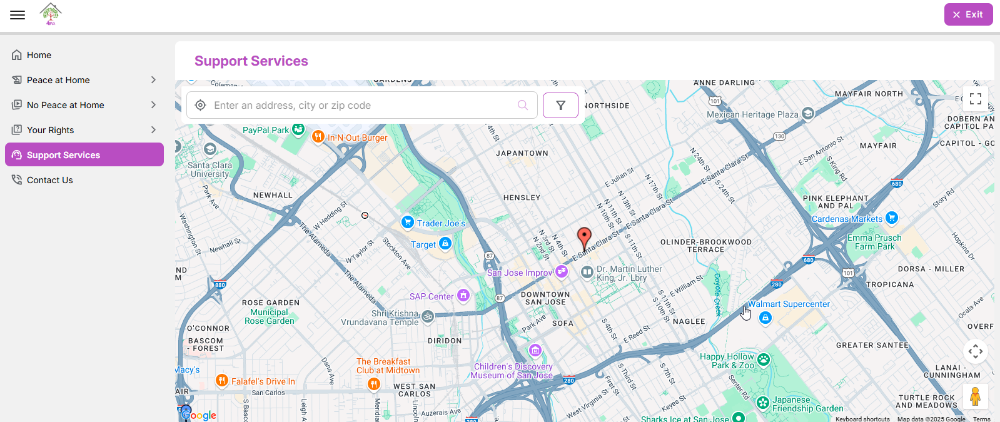
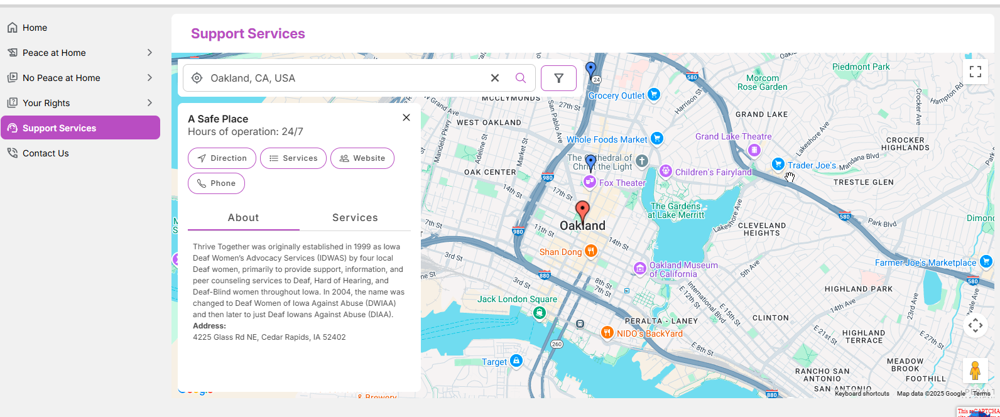
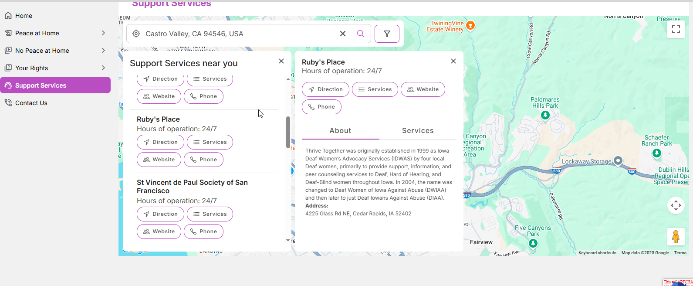
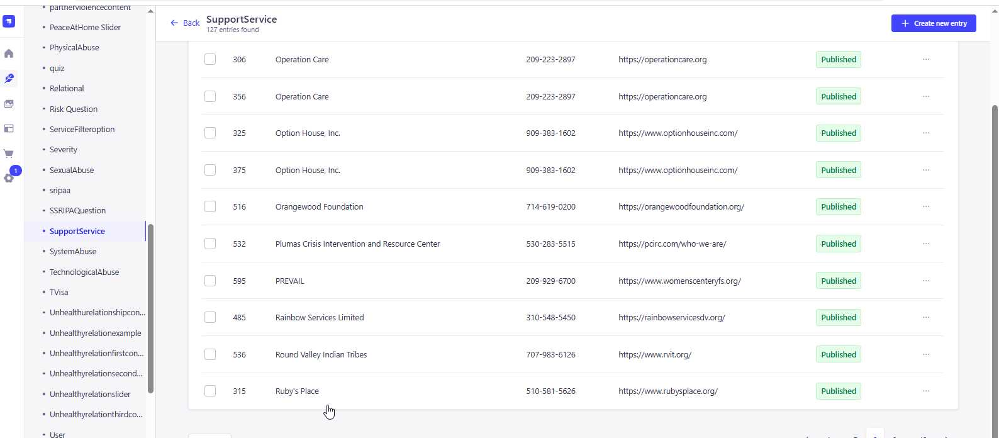
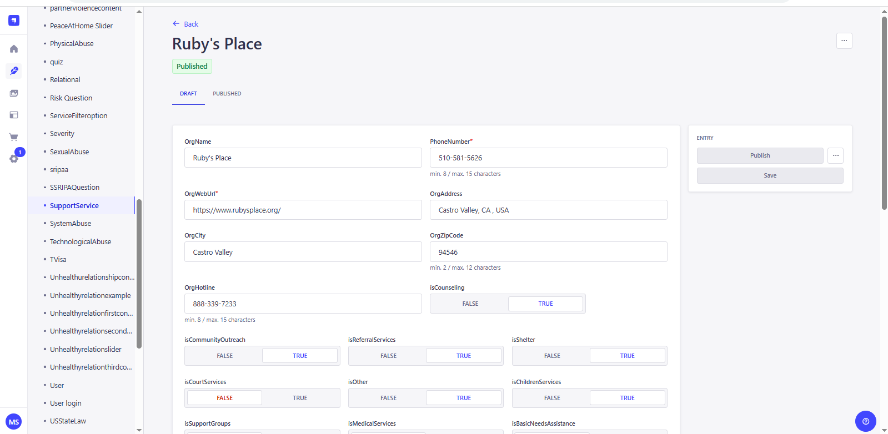
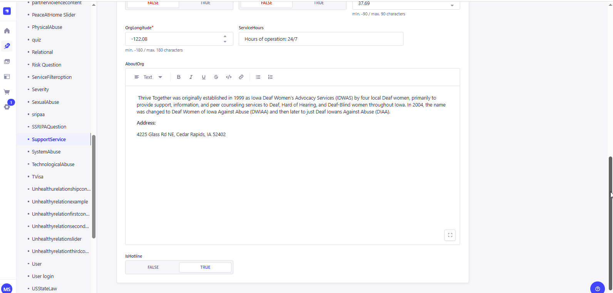

<link rel="stylesheet" href="../css/styles.css">
 
<main>
        <h2>Support Services</h2>
        <p> A support service page with a map location typically displays a map, 
            allowing users to visually locate a service provider using the Address, City or Zipcodebr
           <br>
           <br>
        1. The user inputs a valid URL to launch the Education Module and the URL is : 
           <a target="_blank" href=https://happy-grass-02e46c50f.6.azurestaticapps.net/supportservice>Support Services</a> <br>
            <br><br>
        2. The User will be allowed to search the service provider by providing the address, City or the Zipcode as a search parameters<br>  
            <br><br>
            <br>
           The Admin user must access the CMS site in order to add, edit, and update the material on the page..<br><br>
           Go to CMS > Content Manager > Select and open the 'SupportService' from the side menu.
           Click and open any state to update the content.<br>      
            <br><br>
            <br><br>
            <br>
        
           Update the content if required and Click on Publish to make the changes refelects in the application. <br>
        </p>                 
</main>